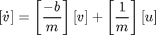
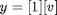
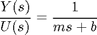
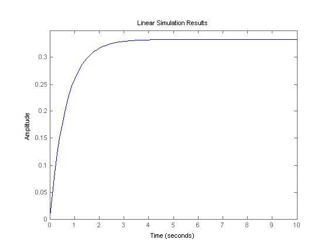
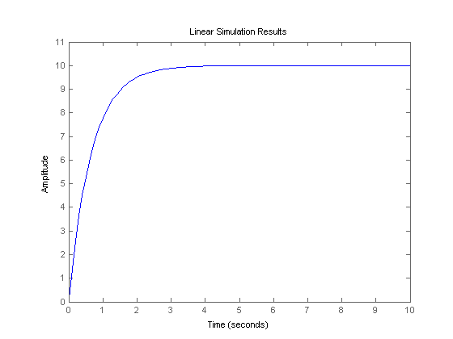

Cruise Control: State-Space Methods for Controller Design
In this tutorial we will design a controller and observer for the cruise control system using the state-space model.
Key MATLAB commands used in this tutorial are: ss , feedback
Contents
State-space equations
The equations of motion in state-space form are as follows:
(1)
(2)
where
(m) vehicle mass 1000 kg
(b) damping coefficient 50 N.s/m
(u) nominal control force 500 N
(v) vehicle velocity where y=v is the system output
Design requirements
- Rise time < 5 s
- Overshoot < 10%
- Steady-state error < 2%
To see the original problem setup, see the Cruise Control: System Modeling page.
Control design using pole placement
The schematic of a full state-feedback system is shown below.

(3)
where
- K = state-feedback gain matrix
- u = r-K.v = control input
Recall from the State-Space Tutorial page, we can use a "pole placement" technique to obtain the desired output. Poles of a closed-loop system can be found from the characteristic equation: the determinant of the [sI-(A-B*K)] matrix. If the poles the system can be placed in the desired location by designing an appropriate control matrix (K), then the desired output can be obtained. In this tutorial, poles will be chosen first, then we will use MATLAB to find the corresponding control matrix (K).
Now, we need to determine where to place poles for our system. Since our [sI-(A-B*K)] matrix is 1x1, we have only one pole to place. Let the pole be at -1.5 (arbitrary). Just as in the State-Space Tutorial, the MATLAB command place will be used to find the control matrix K. Create a new m-file and enter the following commands. Running the m-file in the MATLAB command window should give you the control matrix and step response shown below.
m = 1000; b = 50; t = 0:0.1:10; u = 500*ones(size(t)); A = [-b/m]; B = [1/m]; C = [1]; D = [0]; sys = ss(A,B,C,D); x0 = [0]; p1 = -1.5; K = place(A,B,[p1]) sys_cl = ss(A-B*K,B,C,D); lsim(sys_cl,u,t,x0); axis([0 10 0 0.35])
K =
1450
 As you can see, the rise time is satisfactory, but the steady-state error is too large.
Reference input
Once again from the State-Space Tutorial page, a scaling factor called Nbar (the schematic is shown below) can be used to eliminate the steady-state error. We can use the rscale function to compute the scaling factor. Download it here, rscale.m. The input is already multiplied by 500, and we want the steady-state speed to be 10 m/sec, so we need to account for these factors as well.

Copy the following commands to an m-file and run it in the MATLAB command window. You should get the step response shown below.
Nbar = rscale(sys,K)*10/500; sys_cl = ss(A-B*K,B*Nbar,C,D); lsim(sys_cl,u,t,x0); axis([0 10 0 11])
As you can see, the steady-state error has been eliminated. The rise time is less than 5 seconds and the overshoot is, in fact, zero. All the design requirements are satisfied.